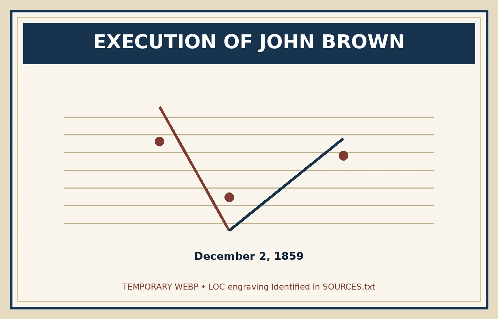

Trial, Execution & Legacy
Captured alive at Harpers Ferry, Brown could no longer fight with weapons—but he could speak, write, and force the country to argue about slavery. During his trial and final weeks in jail, he became more powerful as a symbol than he had ever been as a military leader.
 Brown's execution did not end the argument over him. It transformed him into a symbol that different Americans interpreted in completely different ways.
Brown's execution did not end the argument over him. It transformed him into a symbol that different Americans interpreted in completely different ways.The Trial
Brown was taken to nearby Charles Town, Virginia, where his trial began on October 27, 1859—only a little more than a week after his capture. He faced charges of treason against Virginia, murder, and conspiring with enslaved people to rebel.
The trial moved quickly. Brown was badly wounded from the fighting at the engine house and at times lay on a cot in the courtroom while testimony continued. His lawyers argued that he was too injured to proceed and challenged parts of the case, but the court did not delay for long.
The jury found Brown guilty on all charges. On November 2 he was sentenced to death. Brown then gave a calm statement to the court, insisting that his purpose had been to free enslaved people rather than to commit murder for its own sake.

From Prisoner to Symbol
Brown spent about a month in jail waiting for his execution. During that time he wrote letters to family members, supporters, and acquaintances and continued defending his cause. Newspapers printed his words across the country, meaning that Brown reached a much larger audience as a prisoner than he ever had while planning the raid.
Reactions were sharply divided. Many white Southerners saw Harpers Ferry as proof that abolitionism could lead to armed invasion and slave rebellion. Even Southerners who had previously dismissed abolitionists as a small group now worried that Brown might have secret supporters throughout the North.
Many Northerners condemned the raid itself, but some admired Brown's courage and the calm way he faced death. Radical abolitionists increasingly treated him as a martyr—someone whose death gave new power to the antislavery cause.

December 2, 1859

Brown was hanged in Charles Town on December 2. Virginia brought in soldiers and militia to guard the town and the execution site because officials feared an attempted rescue or another abolitionist attack. Spectators included people who would later become famous during the Civil War era.
Shortly before his death, Brown handed a jailer a final written note. Its message was grim: he now believed the “crimes of this guilty land” would not be ended without bloodshed. He went to the gallows without renouncing his belief that slavery had to be destroyed.
Less than a year and a half later, Confederate forces fired on Fort Sumter and the Civil War began. Brown did not predict the exact course of events, but his final words seemed hauntingly close to what followed.
The John Brown Question
Click each interpretation to see evidence someone might use. None tells the entire story by itself.
Why His Legacy Matters
The Harpers Ferry raid intensified sectionalism. Southern fears of abolitionist violence grew, and militia organizations strengthened in parts of the South. In the North, reactions ranged from disgust at Brown's methods to admiration for his willingness to die fighting slavery.
Brown's name quickly entered speeches, newspapers, church services, political arguments, and songs. “John Brown's Body” became a marching song for Union soldiers during the Civil War, showing how rapidly his memory became tied to the larger struggle over slavery.
Frederick Douglass later argued that although Brown failed to leave Harpers Ferry alive, his sacrifice had struck a powerful blow against slavery by forcing Americans to confront the issue. Brown's raid did not cause the Civil War by itself, but it became one of the dramatic events that convinced many people that compromise over slavery was becoming harder and harder to imagine.
That is why Brown remains so polarizing: the cause he fought against was slavery, but some of the methods he chose included killing, armed raids, and attempts to spark a wider conflict. Understanding his legacy means holding both parts of the story at the same time.

After looking at the evidence, how should John Brown be remembered—and what evidence best supports your answer?